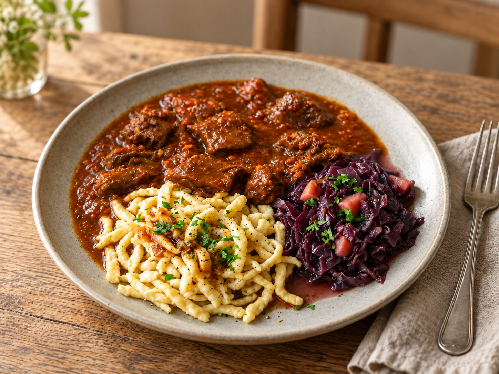

Unsere Klassiker
Rindergulasch

Zutaten
1,5 kg
Rindfleisch
200 g
Schweinebauch
5 Stk.
Zwiebeln
2 EL
Paprikapulver
2 EL
Paprikapulver (Geräuchert)
2 TL
Kümmelsamen (zerstoßen)
1 TL
Pfeffer
3 TL
Majoran
1 Stk.
Lorbeerblatt
½ TL
Cayennepfeffer
550 ml
Rinderbrühe
3 EL
Tomatenmark
3 Stk.
Knoblauchzehen
Zubereitung
- Fleisch in ca. 5 cm große Würfel und den Bauchspeck in ca. 2 cm große Würfel schneiden. Portionsweise kräftig anbraten und anschließend aus dem Topf nehmen.
- Zwiebeln in dünne Halbringe schneiden und im selben Topf in etwas Öl goldbraun karamellisieren.
- Tomatenmark und fein gehackten Knoblauch dazugeben und kurz anschwitzen. Fleisch wieder in den Topf geben, Gewürze hinzufügen und alles 1–2 Minuten mitrösten.
- Mit Rinderbrühe ablöschen und bei niedriger Hitze ca. 3 Stunden köcheln lassen, bis das Fleisch schön zart ist.